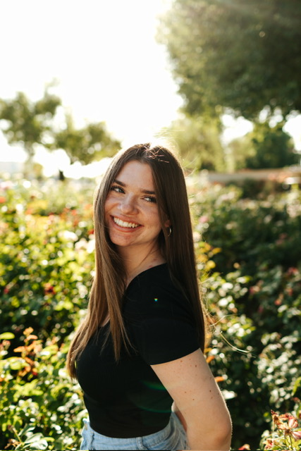

Karissa Smallwood

Summary
Hello! I'm Karissa Smallwood, a dedicated Software Engineering student eagerly pursuing internship opportunities to further develop my skills and contribute to innovative projects. With a reputation for my strong work ethic, organizational abilities, and unquenchable thirst for knowledge, I'm fully committed to making impactful contributions to the tech industry. I'm excited to connect with you and explore potential opportunities together!
Education
Northern Arizona University, Flagstaff, AZ
Bachelor of Science in Software Engineering, 4.0
Expected Graduation: December 2025
Relevant Coursework:
- Database Systems
- Computer Networks
- Data Structures
- Software Testing
- Software Architecture
- Mobile App Development (Android)
Professional Experience
Andy's Frozen Custard, Mesa, AZ | October 2020 - January 2025
Shift Lead
- Led daily operations, ensuring top-notch service, quality, and safety.
- Managed a team, delegating tasks and keeping everything on track during busy shifts.
- Adapted to unexpected challenges, resolving customer issues quickly and effectively.
- Trained and supported new team members, creating a positive, high-energy work environment.
- Stayed calm and focused under pressure, even when short-staffed.
Relevant Experience
Undergraduate Student Research, RESHAPE Lab | July 2024 - Present
Research Assistant
- Building skills in JavaScript and client-server web programming through hands-on research projects.
- Working with a team to create a gamified version of GitHub for helping new Computer Science students learn the ways of GitHub.
- Using creative approaches, like gamification and large language models, to make learning GitHub concepts more engaging and inclusive.
- Developing critical thinking skills by participating in studies, experiments, and analyzing open-source project data.
- RESHAPE Lab Website
Project, HapTech | January 2025 - Present
Team Member
- Designed and built a research-grade framework for creating 3D haptic simulations using the Franka Research 3 robot to support human-robot interaction studies.
- Developed modular systems for configuring experiments, improving setup efficiency, and enhancing data collection reliability.
- Collaborated with a multidisciplinary team to integrate CHAI3D and libfranka, enabling real-time communication between the robot and simulation environment.
- Focused on usability and reusability by implementing experiment templates and XML configuration files for consistent and repeatable testing.
- Contributed to advancing haptic research by creating tools that allow researchers to design, run, and analyze experiments with greater flexibility and control.
Project, PlantPals | January 2024 - May 2024
Team Member
- Developed a plant care website featuring user profiles, a plant database, and discussion boards using Django, Docker, and GitHub.
- Contributed to the design and implementation of the CSS for the website to improve user experience and interface.
- Worked on the discussion board functionality, allowing users to post and interact with plant-related content while maintaining moderation features.
- Implemented features like plant profiles, watering schedules, and a searchable plant database with care information, supporting both signed-in and guest users.
Skills
Programing Languages:
- C
- C++
- Python
- Kotlin
- CSS
- HTML
Other Skills:
- Excel
- Word
- PowerPoint
- Leadership
- Problem Solving
- Data Analysis
- Computer Skills